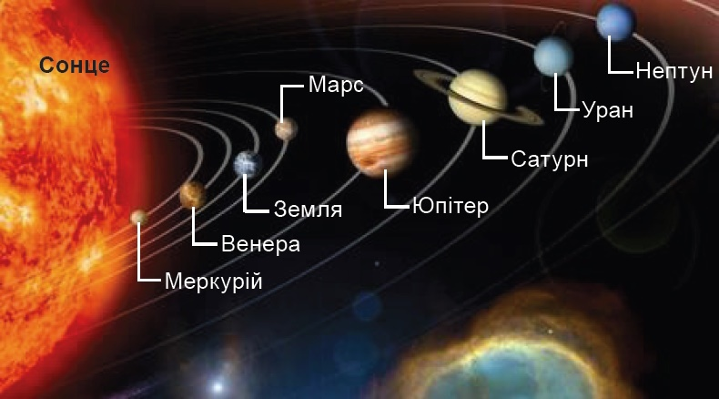

Планети сонячної системи

Планети
Планети поділяються на дві групи, що відрізняються масою, хімічним складом (це виявляється значною різницею їх густини), швидкістю обертання та кількістю супутників. Чотири найближчі до Сонця
планети (планети земної групи) порівняно невеликі, складаються здебільшого з щільної кам'янистої речовини та металів. Планети-гіганти — Юпітер, Сатурн, Уран і Нептун — набагато масивніші, складаються здебільшого з легких речовин і тому, незважаючи на величезний тиск у їхніх надрах, мають малу густину. У Юпітера й Сатурна основну частку їхньої маси складають водень і гелій. Вони містять також до 20 % кам'янистих речовин і легких сполук кисню, вуглецю й азоту, що за низьких температур конденсуються на лід. В Урана й Нептуна лід і кам'янисті речовини становлять дещо більшу частину їхньої маси.
Венера, Земля й Марс мають атмосфери, що складаються з газів, які виділилися з їхніх надр. У планет-гігантів атмосфери являють собою безпосереднє продовження їхніх надр: ці планети не мають твердої чи рідкої поверхні. Зі збільшенням глибини атмосферні гази поступово переходять у конденсований стан.
| Планета | Радіус | Супутники | Відстань від Сонця | Середня орбітальна швидкість | Період обертання навколо Сонця | Середня температура |
|---|---|---|---|---|---|---|
| Меркурій | 2 439,7 км | 0 | 58 млн. км | 47,87 км/с | 88 днів | +427°С |
| Венера | 6 051,8 км | 0 | 108 млн. км | 35,02 км/с | 225 днів | +470 °C |
| Земля | 6 371 км | Місяць | 149,6 млн. км | 29,78 км/с | 365 днів | +16°C |
| Марс | 3 389,5 км | 2 | 228 млн. км | 24,13 км/с | 686 днів | -63°С |
| Юпітер | 69 911 км | 95 | 778,57 млн км | 13,07 км/с | 4333 днів(11 років) | -145°С |
| Сатурн | 58 232 км | 146 | 1,43 млрд. км | 9,69 км/с | 10747 Днів (29 років) | -170°С |
| Уран | 25 362 км | 28 | 2,87 млрд. км | 6,81 км/с | 30660 днів (83 роки) | -195°C |
| Нептун | 24 622 км | 16 | 4,5 млрд. км | 5,43 км/с | 60190 днів (164 роки) | -218°C |